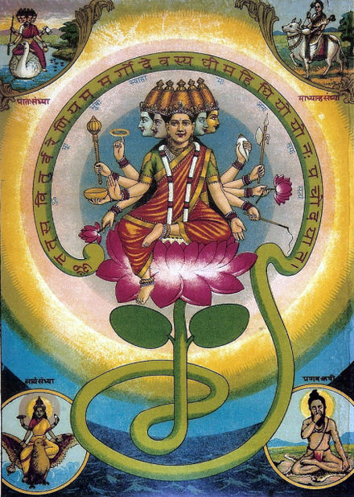

Gayatri (Sanskrit: गायत्री, IAST:Gāyatrī) is the personified form of the Gayatri Mantra, a popular hymn from Vedic texts.[3] She is also known as Savitri, and bears the epithet of Vedamata (mother of the Vedas). Gayatri is often associated with Savitr, a solar deity in the Vedas.[4][5] According to the Skanda Purana, Gayatri is another name of Saraswati, and is the consort of Brahma.[6] Shaivite texts identify Mahagayatri as the consort of Shiva, in his highest form of Sadasiva, with five heads and ten hands.
 Gayatri Mantra Video